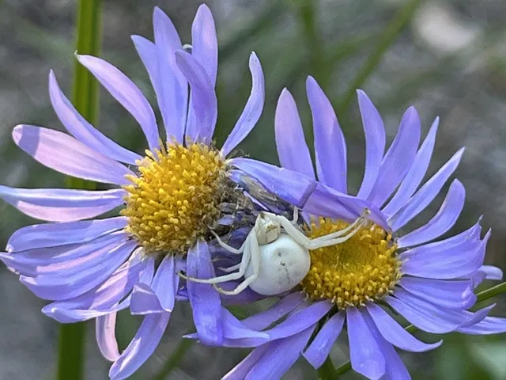
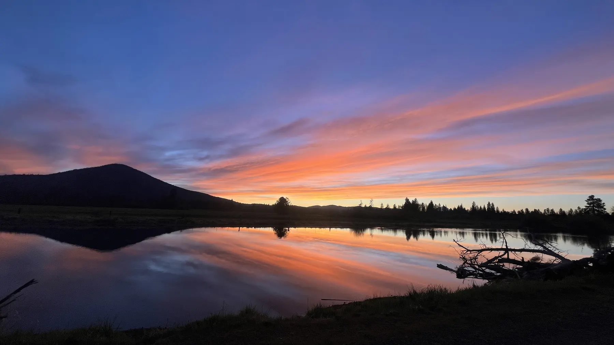
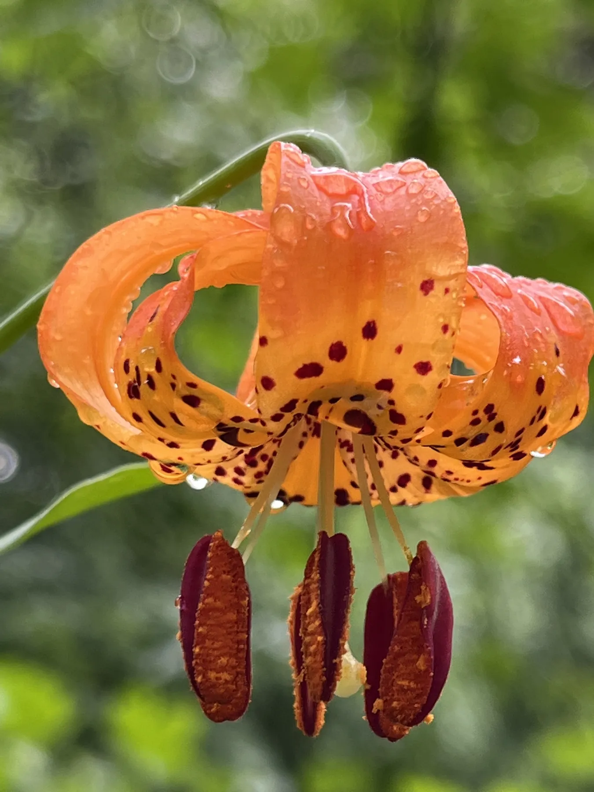

Restoration & the living landscape
A closer look
at what grows.
The health of a place begins with the relationships beneath our feet and all around us.
Get to know Kelly01 / Meet Kelly
Rooted in connection.
Kelly Head is a restoration specialist paying attention to the living systems that make a landscape whole.
From forests and soil to grasses, flowers, and pollinators, the natural world is full of connections worth noticing and caring for. This space shares a few of the places and details that invite a closer look.


02 / The bigger picture
Everything is connected.
Thoughts and conversations about the land, its resilience, and our place within it.
Living forests
Forest management, wildfire impact, and the role of mother trees in a changing landscape.
Healthy soil
The life beneath our feet, soil health, and the simple good of composting.
Our part
How each of us can relate more thoughtfully to forests, grasses, soil, and the environment around us.
“When we pay attention to the little things, we begin to see the whole.”
A field note for the curious03 / In the field
Look a little closer.
A collection of flowers, pollinators, and places shared by Kelly.
Select a photograph to view it larger ↗

04 / Stay in touch
Let's keep the conversation growing.
Interested in the living landscape, restoration, or simply getting in touch? Kelly would love to hear from you.
Email Kelly